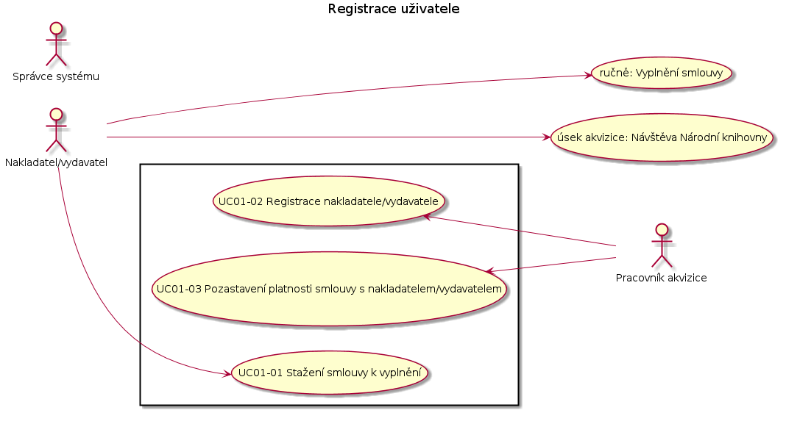
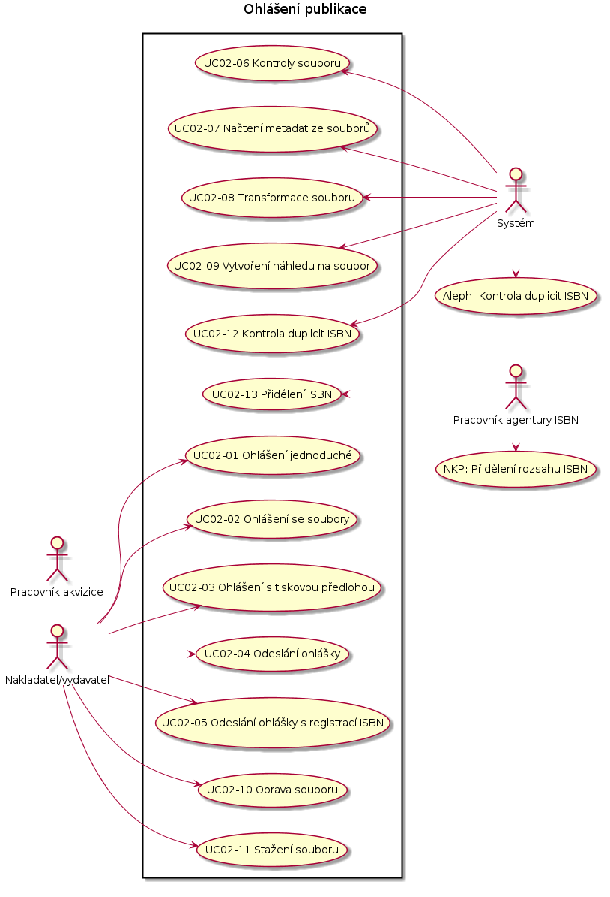
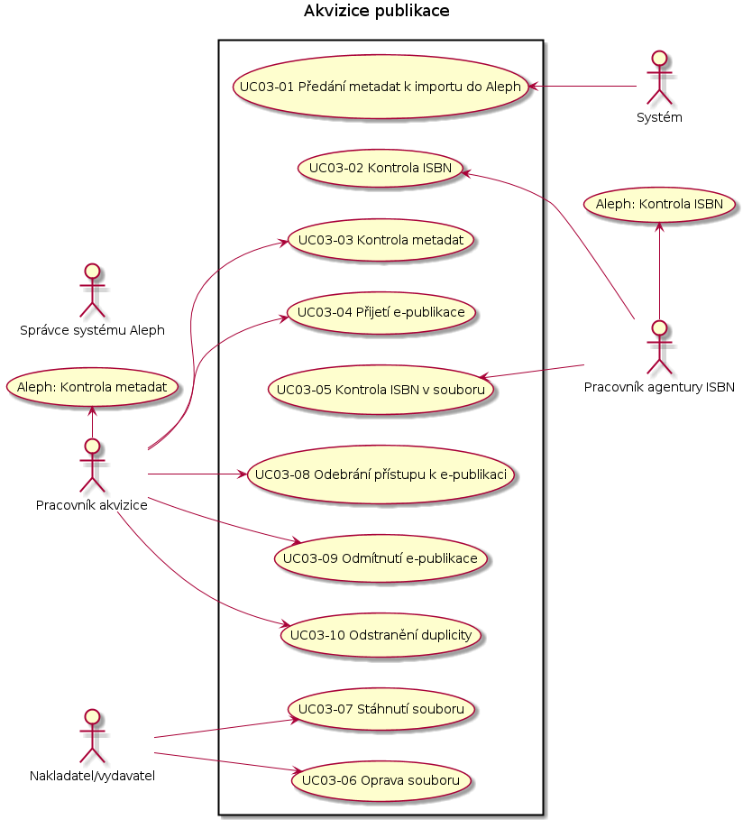

Případy užití¶
Note
Registrace ISBN se bude dit pres jeden formular, i pro tistene knihy. Pak nakladatel pouziva jen jeden ISBN formular. Panu Zahorikovi se budou ukladat registrace stejne jako z puvodniho registracniho formulare. Nakladatel by pak mel usnadnenou praci, protoze pak by mel jen jedno misto na registraci ISBN. Panu Jerabkovi a p. Zahorikovi bude chodit do Alephu zprava.
Note
zalozeni periodika
Narodni technicka knihovna ma vlastni agenturu ISSN. Maji vlastni agenturu. Neni dohodnuta zadna sw komunikace s touto agenturou. V Alephu se objevi zaznam az kdyz prijde papirovy vytisk. Ten pracovnik vezme a vlozi do Alephu zaznam. i s ISSN.
Note
pokracujici zdroj
u zaznamu, co ma issn, bude k dispozici tlacitko “pridat”. Tj. pridava se dalsi vytisk. Ten nema nove isbn a patri pod jeden hlavni zaznam.
Note
UC05 - Doplneni bibliografickeho popisu - bibliografie potrebuje prohlizet po jednotlivych strankach - v zaznamu v Alephu bude proklik na nahled do e-deposit, podobne jako je proklik do krameria
UC01 Registrace nakladatele¶
UC01-01 Stažení smlouvy k vyplnění¶
účastníci:
- Nakladatel/vydavatel
vstupní podmínky:
- Nakladatel/vydavatel otevřel úvodní stránku
tok událostí:
- Systém zobrazí úvodní stránku
- informace o e-deposit
- linku se smlouvou pro nakladatele ke stažení
- linku pro přihlášení
- linku pro ohlášení
- Nakladatel/vydavatel klikne na “Smlouva pro nakladatele”
- Systém poskytne smlouvu k uložení
následné podmínky:
Nakladatel/vydavatel může vyplnit smlouvu pro nakladatele.
UC01-02 Registrace nakladatele/vydavatele¶
účastníci:
- Pracovník akvizice
vstupní podmínky:
- pracovník akvizice má k dispozici vyplněnou smlouvu pro nakladatele
- pracovník akvizice je přihlášený do systému
tok událostí:
- Systém zobrazí úvodní stránku
- přehled e-publikací k akvizici
- linku na vytváření účtů pro nakladatele
- přehled nakladatelů/vydavatelů
- vyhledávání nakladatelů/vydavatelů
- Pracovník akvizice klikne na linku “Nový účet pro nakladatele”
- Systém poskytne formulář pro zadání údajů o nakladateli
- přihlašovací jméno
- název nakladatele
- adresa nakladatele
- url nakladatele
- email kontaktní osoby
- telefon kontaktní osoby
- načtení kopie podepsané smlouvy
- Pracovník akvizice načte kopii podepsané smlouvy a vyplní formulář
- Pracovník akvizice odešle údaje do systému
- Systém zobrazí potvrzení o uložení a zobrazí přidělené heslo. Také zobrazí linku s vygenerovaným dodatkem ke smlouvě.
následné podmínky:
Nakladatel/vydavatel se bude moci přihlásit do systému.
Přístupové údaje budou uvedeny na dodatku smlouvy.
UC01-03 Pozastavení platnosti smlouvy s nakladatelem/vydavatelem¶
účastníci:
- Pracovník akvizice
vstupní podmínky:
- pracovník akvizice je přihlášený do systému
tok událostí:
- Systém zobrazí úvodní stránku jako v UC01-02/1.
- Pracovník do vyhledávacího políčka zadá název nakladatele
- Systém zobrazí přehled nakladatelů, kteří odpovídají zadání
- Pracovník klikne na linku vybraného nakladatele/vydavatele
- Systém zobrazí detail nakladatele/vydavatele
- přihlašovací jméno
- název nakladatele
- adresa nakladatele
- url nakladatele
- email kontaktní osoby
- download kopie podepsané smlouvy
- download dodatku ke smlouvě
- linku na pozastaveni platnosti
- Pracovník akvizice klikne na linku “Pozastavení platnosti smlouvy”
- Systém zobrazí potvrzení o pozastavení platnosti smlouvy a zobrazí detail nakladatele/vydavatele
- zobrazí linku na obnovení platnosti smlouvy
následné podmínky:
Nakladatel/vydavatel má k dispozici jen přístup ke svým údajům ke čtení a nemůže si stahovat soubory.
UC01-04 Detail účtu nakladatele/vydavatele¶
účastníci:
- Pracovník akvizice
vstupní podmínky:
- pracovník akvizice je přihlášený do systému
tok událostí:
- Systém zobrazí úvodní stránku jako v UC01-02/1.
- Pracovník do vyhledávacího políčka zadá název nakladatele
- Systém zobrazí přehled nakladatelů, kteří odpovídají zadání
- Pracovník klikne na linku vybraného nakladatele/vydavatele
- Systém zobrazí detail nakladatele/vydavatele
- přihlašovací jméno
- název nakladatele
- adresa nakladatele
- url nakladatele
- email kontaktní osoby
- download kopie podepsané smlouvy
- linku na pozastaveni platnosti
následné podmínky:
UC02 Ohlášení publikace¶
UC02-01 Ohlášení jednoduché¶
účastníci:
- Nakladatel/vydavatel
vstupní podmínky:
- Nakladatel/vydavatel otevřel úvodní stránku
tok událostí:
- Systém zobrazí stránku jako v UC01-01
- Nakladatel/vydavatel klikne na linku “Jednoduché ohlášení”
- Systém zobrazí formulář:
- ISBN *
- Vazba/forma
- Cena
- Název *
- Podnázev
- Část (svazek, díl)
- Název části
- Autor (příjmení, křestní jméno)
- Další autoři (příjmení, křestní jméno)
- Edice
- Číslo svazku
- URL (e-publikace) *
- Formát (e-publikace) *
- Místo vydání *
- Nakladatel *
- Měsíc a rok vydání *
- Vydáno v koedici s
- Pořadí vydání *
- Zpracovatel záznamu *
- Nakladatel/vydavatel vyplní formulář
- Nakladatel/vydavatel klikne na tlačítko “Odeslat k akvizici”
- Systém si data uloží
následné podmínky:
Pracovník agentury ISBN má k dispozici novou ohlášku ke kontrole ISBN
UC02-02 Ohlášení se soubory¶
účastníci:
- Nakladatel/vydavatel
vstupní podmínky:
- Nakladatel/vydavatel se přihlásil do systému
tok událostí:
Systém zobrazí úvodní stránku
- informace o e-deposit
- linku se smlouvou pro nakladatele ke stažení
- linku pro odhlášení
- linku pro ohlášení publikace
- přehled ohlášených publikací
- políčko k vyhledávání ohlášených publikací
Nakladatel/vydavatel klikne na “Ohlášení publikace”
Systém zobrazí formulář:
- ISBN *
- URL (e-publikace) *
- Formát (e-publikace) *
- linka na upload souboru (e-publikace)
Note
u tohoto formuláře systém zobrazí tlačítko + pro přidání další trojice ISBN,URL,Formát
u tohoto formuláře systém zobrazí tlačítko “Načíst metadata ze souboru”
Systém dále zobrazí formulář na upload tiskové předlohy:
- URL
- Formát
- linka a upload souboru
Note
u tohoto formuláře systém zobrazí tlačítko + pro přidání další dvojice URL,Formát
Systém dále zobrazí formulář na zadávání metadat:
- Vazba/forma
- Cena
- Název *
- Podnázev
- Část (svazek, díl)
- Název části
- Autor (příjmení, křestní jméno)
- Další autoři (příjmení, křestní jméno)
- Edice
- Číslo svazku
- Místo vydání *
- Nakladatel *
- Měsíc a rok vydání *
- Vydáno v koedici s
- Pořadí vydání *
- Zpracovatel záznamu *
Note
Systém zobrazí tlačítko “Uložit”
KDYŽ nakladatel/vydavatel klikne na tlačítko “Načíst metadata ze souboru”
4.1. Systém uloží soubor
4.2. Systém načte metadata ze souboru - UC02-05
4.3. Systém zobrazí formulář jako v předešlém kroku
4.4. Systém předvyplní formulář údaji, které načetl ze souboru
Nakladatel/vydavatel vyplní formulář pro zadávání metadat
KDYŽ nakladatel klikne na tlačítko +
5.1. Systém přidá další formulář:
- ISBN
- URL (e-publikace)
- Formát (e-publikace)
- linka na upload souboru (e-publikace)
Note
u tohoto formuláře systém zobrazí tlačítko + pro přidání další trojice ISBN,URL,Formát
u tohoto formuláře systém zobrazí tlačítko “Načíst metadata ze souboru”
5.2. Nakladatel/vydavatel vyplní další ISBN ohlašované publikace a zadá soubor
5.3. Nakladatel/vydavatel pokračuje jako krokem 4
Nakladatel/vydavatel klikne na tlačítko “Uložit”
Systém si data a soubory uloží
Systém provede kontroly souborů, transformaci souborů, vytvoření náhledu, kontrolu duplicit ISBN
následné podmínky:
Nakladatel/vydavatel může uloženou ohlášku najít v seznamu rozpracovaných ohlášek.
UC02-03 Ohlášení s tiskovou předlohou¶
účastníci:
- Nakladatel/vydavatel
vstupní podmínky:
- Nakladatel/vydavatel se přihlásil do systému
tok událostí:
- Tok událostí je stejný jako v UC02-02.
- NAVÍC Nakladatel/vydavatel vyplní formulář na upload tiskové předlohy
- Systém si data uloží
- Systém provede kontroly souborů
následné podmínky:
Nakladatel/vydavatel může uloženou ohlášku najít v seznamu rozpracovaných ohlášek.
UC02-04 Odeslání ohlášky¶
účastníci:
- Nakladatel/vydavatel
vstupní podmínky:
- Nakladatel/vydavatel se přihlásil do systému
tok událostí:
- Nakladatel/vydavatel uložit novou ohlášku podle UC02-02.
- Systém zobrazí detail ohlášky a tlačítka “K akvizici”, “K akvizici a přidělit ISBN”
- Nakladatel/vydavatel klikne na tlačítko “K akvizici”
- Systém ohlášku uloží
následné podmínky:
Nakladatel/vydavatel může ohlášku najít v seznamu ohlášek v akvizici.
Pracovník ISBN agentury má k dispozici novou e-publikaci ke kontrole ISBN - UC03-02
UC02-05 Odeslání ohlášky s registrací ISBN¶
účastníci:
- Nakladatel/vydavatel
vstupní podmínky:
- Nakladatel/vydavatel se přihlásil do systému
tok událostí:
Tok událostí je stejný jako v UC02-02 Ohlášení se soubory, nebo UC02-03 Ohlášení s tiskovou předlohou, UC02-04 Odeslání ohlášky
S rozdílem, že nakladatel/vydavatel nevyplnil u některé položky ISBN.
A neklikl na tlačítko “K akvizici”
Nakladatel/vydavatel klikl na tlačítko “K akvizici a přidělit ISBN”
Systém si data uloží
následné podmínky:
Nakladatel/vydavatel může uloženou ohlášku najít v seznamu ohlášek v akvizici.
Nakladatel/vydavatel již nemůže upravovat údaje, co vložil. Jen přidávat dodatečné opravy souborů.
Pracovník ISBN agentury má k dispozici e-publikaci k přidělení ISBN - UC02-13
UC02-06 Kontroly souboru¶
UC02-07 Načtení metadat ze souborů¶
UC02-08 Transformace souboru¶
UC02-09 Vytvoření náhledu na soubor¶
UC02-10 Oprava souboru¶
účastníci:
- Nakladatel/vydavatel
vstupní podmínky:
- Nakladatel/vydavatel se přihlásil do systému
- Nakladatel/vydavatel uložil e-publikaci do systému UC02-02
tok událostí:
Systém zobrazí úvodní stránku jako v UC02-02/1.
Nakladatel/vydavatel zadá do vyhledávacího políčka:
- část ISBN
nebo
- část Názvu
nebo
- část Jména autora
Nakladatel klikne na linku “Vyhledat”
Systém zobrazí úvodní stránku jako v UC02-02/1.
přehled ohlášených publikací je omezen podle zadaného filtru
Nakladatel/vydavatel klikne na vybranou ohlášenou publikaci
Systém zobrazí detail ohlášené publikace
- Vazba/forma
- Cena
- Název
- Podnázev
- Část (svazek, díl)
- Název části
- Autor (příjmení, křestní jméno)
- Další autoři (příjmení, křestní jméno)
- Edice
- Číslo svazku
- Místo vydání
- Nakladatel
- Měsíc a rok vydání
- Vydáno v koedici s
- Pořadí vydání
- Zpracovatel záznamu
systém dále zobrazí přehled vložených e-publikací
pro každou e-publikaci:
- ISBN
- URL
- Formát
- linka na opravu
- linka na získání souboru
systém dále zobrazí přehled tiskových předloh
pro každou tiskovou předlohu:
- URL
- Formát
- linka na opravu
- linka na získání souboru
Nakladatel/vydavatel klikne na linku “Oprava souboru”
Systém přikleslí formulář na zadání opravy souboru:
- ISBN
- URL
- Formát
- linka na upload souboru
Systém zobrazí linku “Uložit”
Nakladatel/vydavatel pokračuje krokem 7. dokud má další soubory k opravě
Nakladatel/vydavatel klikne na linku “Uložit”
Systém uloží opravy souborů
Systém provede kontroly souborů
následné podmínky:
Pracovník ISBN agentury má k dispozici další e-publikaci ke kontrole ISBN - UC03-02
UC02-11 Stážení souboru¶
účastníci:
- Nakladatel/vydavatel
vstupní podmínky:
- Nakladatel/vydavatel se přihlásil do systému
- Nakladatel/vydavatel uložil e-publikaci do systému UC02-02
tok událostí:
- Nakladatel/vydavatel vyhledá detail ohlášené publikace jako v UC02-08
- Nakladatel/vydavatel u vybranéhou souboru klikne na linku k získání souboru
- Systém nabídne soubor ke stažení
následné podmínky:
Nakladatel/vydavatel má ve svém počítači stažený soubor.
UC02-12 Kontrola duplicity ISBN¶
UC02-13 Přidělení ISBN¶
UC03 - Akvizice publikace¶
UC03-01 Předání metadat k importu do Aleph¶
UC03-01 Vložení souborů¶
účastníci:
- Nakladatel/vydavatel
vstupní podmínky:
- Nakladatel/vydavatel se přihlásil do systému
tok událostí:
Systém zobrazí úvodní stránku
- přehled vložených knih, předloh, časopisů
- přehled vložených knih, předloh, časopisů, co čekají na akci nakladatele/vydavatele
- přehled vložených souborů
- vyhledávací políčko u každého přehledu
- linka “Vložit soubor”
- linka s názvem akce u každé knihy, předlohy, časopisu
- linka “upravit si heslo, údaje o uživateli”
název akce se bude lišit podle toho, v jakém je kniha,předloha,časopis stavu
Nakladatel/vydavatel klikne na “Vložit soubor”
Systém zobrazí přehled podporovaných formátů
Systém zobrazí formulář:
- pro vložení hlavních souborů
- pro vložení binárních příloh
u každého hlavního souboru budou vstupy pro:
- popis souboru
- ISBN
- URL
u již vložených souborů systém nabídne možnost soubor smazat.
systém napovídá ISBN, co jsou v přehledu vložených knih, předloh a časopisů
Nakladatel/vydavatel odešle formulář
Systém provede kontroly souborů
IF kontroly proběhnou v pořádku
7.1. Systém u souboru zobrazí linku “Vyplnění metadat”
- IF kontroly neproběhnou v pořádku
8.1. Systém zobrazí hlášku s chybou 8.2. Systém opakuje krok 4.
následné podmínky:
V systému jsou uloženy soubory k nové e-publikaci.
UC03-02 Kontrola ISBN¶
UC03-02 Nahrazení souborů¶
účastníci:
- Nakladatel/vydavatel
vstupní podmínky:
- Nakladatel/vydavatel se přihlásil do systému
tok událostí:
Systém zobrazí úvodní stránku - viz UC03-01/1
Nakladatel/vydavatel zadá do vyhledávácího políčka část ISBN, nebo URL, nebo popisu souboru
Systém zobrazí přehled vložených knih, předloh a časopisů, který odpovídá zadanému omezení
- u každého záznamu je linka “opravit”
Nakladatel/vydavatel klikne na linku “opravit”
Systém zobrazí formulář:
- pro vložení hlavních souborů
- pro vložení binárních příloh
u každého hlavního souboru budou vstupy pro:
- popis souboru
- ISBN
- URL
u již vložených souborů systém nabídne možnost soubor smazat.
Nakladatel/vydavatel odešle formulář
Systém provede kontroly souborů
dále jako UC03-01/7, UC03-01/8
následné podmínky:
V systému jsou uloženy soubory k nové e-publikaci.
UC03-03 Kontrola metadat¶
UC03-03 Spárování souborů s ISBN¶
účastníci:
- Nakladatel/vydavatel
- Systém
vstupní podmínky:
- Nakladatel/vydavatel se přihlásil do systému
tok událostí:
Systém zobrazí úvodní stránku - viz UC03-01/1
Nakladatel/vydavatel vyhledá vybrané ISBN
Nakladatel/vydavatel vyhledá vybraný soubor
- Nakladatel/vydavatel přetáhne myší vybrané ISBN k vybranénu souboru
NEBO b. Nakladatel/vydavatel přetáhne myší vybraný soubor k vybranému ISBN
NEBO c. 1. Nakladatel/vydavatel klikne na vybraný soubor
- Systém zobrazí:
- ISBN
- URL
- popis souboru
- Nakladatel/vydavatel vyplní ISBN
- Nakladatel/vydavatel
Systém přesune spárovaný soubor do stavu k vyplnění metadat
následné podmínky:
UC03-04 Přijetí e-publikace¶
UC03-04 Vyplnění a sloučení metadat¶
účastníci:
- Nakladatel/vydavatel
vstupní podmínky:
- Nakladatel/vydavatel se přihlásil do systému
tok událostí:
Systém zobrazí úvodní stránku viz UC01-01
u každého záznamu knihy, předlohy, časopisu bude linka “Upravit”
Nakladatel/vydavatel klikne na linku “Upravit”
Systém zobrazí formulář na zadání popisných metadat:
bude to tabulka. V jednom sloupci budou pole k ručnímu zadání hodnot:
- název
- podnázev
- část
- název části
- autor
- další autoři
- edice
- číslo svazku
- místo vydání
- nakladatel
- měsíc a rok vydání
- vydáno v koedici
- pořadí vydání
- vazba/forma
- cena
V dalším sloupci budou načtené údaje ze souboru
V dalším sloupc budou načtené údaje z Aleph
- volně přístupná e-publikace
- TODO údaje o licencovaných e-publikacích
Nakladatel/vydavatel vyplní/opraví údaje ve sloupci pro ruční zadání
NEBO
ve vedlejších sloupcích zaškrtne údaje, které chce přijmout a použít
Nakladatel/vydavatel odešle formulář
následné podmínky:
UC03-05 Kontrola ISBN v souboru¶
UC03-05 Odeslání elektronické knihy¶
účastníci:
- Nakladatel/vydavatel
vstupní podmínky:
- Nakladatel/vydavatel se přihlásil do systému
- Nakladatel/vydavatel provedl UC03-04
tok událostí:
Systém zobrazí úvodní stránku - viz UC03-01/1
U knih, co mají vyplněná metadata se objeví linka “K akvizici”
Nakladatel/vydavatel klikne na “K akvizici”
Systém převede knihu do stavu “Akvizice”
následné podmínky:
Pracovník akvizice má k dispozici knihu ke kontrole.